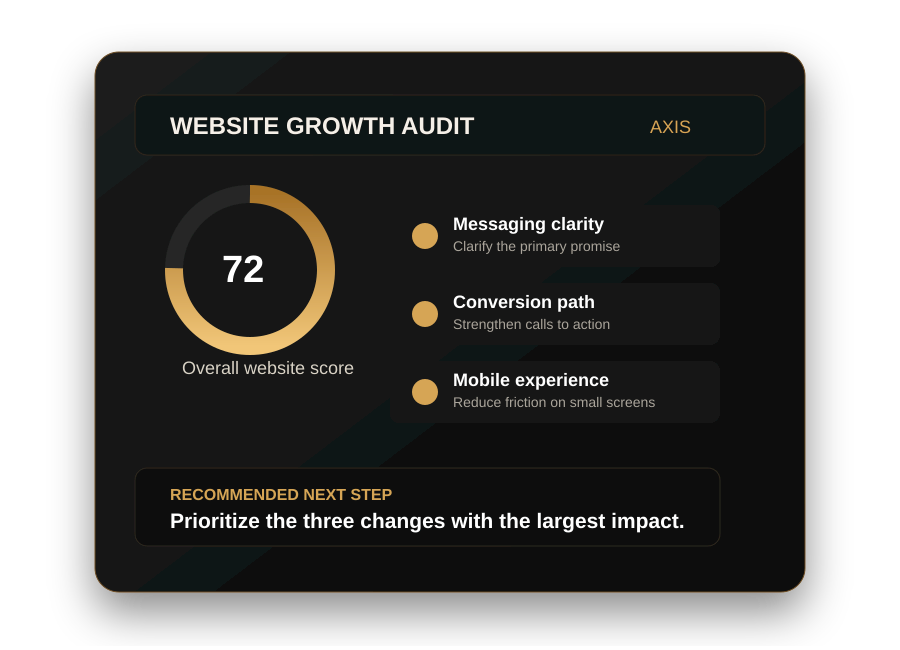

Website scorecard
A clear assessment of messaging, design, mobile usability, trust, SEO fundamentals, and conversion flow.
Free, personalized website audit
We’ll review your messaging, mobile experience, trust signals, and conversion path—then send a clear, prioritized action plan you can use whether you hire us or not.
What you’ll receive
Every finding is organized by impact, urgency, and effort so you know what to fix first.
A clear assessment of messaging, design, mobile usability, trust, SEO fundamentals, and conversion flow.
The specific points where visitors may become confused, lose confidence, or leave without taking action.
Practical improvements you can apply immediately, ranked by likely impact and implementation effort.
The smallest complete solution for your actual needs—without under-solving or overbuilding.
Built for action
Your audit explains what we found, why it matters, and how to correct it. You keep the strategy regardless of whether you hire Axis to implement it.

Simple process
Share your name, email, and URL. The form takes about 30 seconds.
Axis analyzes how your site communicates, builds trust, and moves visitors toward action.
Get your audit by email within two business days with clear priorities and next steps.
Why Axis exists
I know what it means to build with limited time, limited resources, and people depending on the outcome. Axis was created to give small-business owners the strategic clarity usually reserved for companies with full marketing teams.
No jargon. No pressure. No recommending a larger package simply because it costs more.
“The goal is the smallest complete solution that fixes the real problem.”
— Axis
Before you submit
Yes. There is no payment required and no obligation to purchase implementation services.
Messaging clarity, trust signals, mobile usability, calls to action, conversion flow, basic SEO, speed indicators, and overall user experience.
No. If implementation is appropriate, the audit may recommend a scope and explain why smaller or larger options are not the best fit.
The current target is delivery within two business days. If demand changes, the confirmation page and email should be updated before launch.
Clarity before commitment
Start with a free audit. Keep the strategy either way.